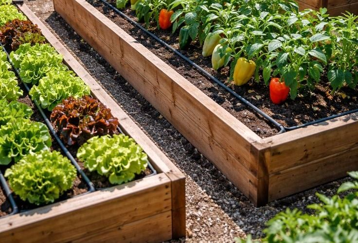

Volunteer With GreenReach
Become part of the GreenReach community. Help us grow urban gardens, run workshops and make a real difference in Johannesburg neighbourhoods. No experience is needed - we will teach you.

Ways to Volunteer
Select a role to read more. You can open as many as you like.
Garden care
Plant, water, weed and harvest in our raised beds. A typical shift is three to four hours, and our garden coordinator will show you each task.
Workshops and teaching
Help run workshops on growing food, composting and healthy cooking, or lead a children's garden club session during school holidays.
Events and fundraising
Help organise harvest days, seedling swaps and the year-end picnic, from welcoming guests to running stalls. See the events calendar.
Administration and social media
Support our coordinators with bookings, photography, newsletters and social media posts. This role can often be done from home.
Volunteer Questions Answered
Do I need gardening experience?
No. Every new volunteer attends a short induction and works alongside an experienced team member for their first sessions.
How old do I have to be?
Volunteers must be 16 or older. Anyone under 18 needs written consent from a parent or guardian.
What should I bring?
Closed shoes, a hat, sunscreen and a bottle of water. We provide tools and gloves.
How much time do I need to give?
Most volunteers give two to four hours a week, but you choose what suits you. You can change your hours at any time.
Does it cost anything?
No. Volunteering is completely free. After 40 hours you can request a reference letter and certificate of service.
Still have a question? Contact us and we will be happy to help.